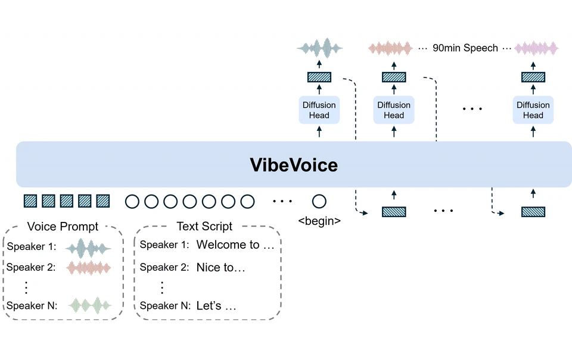
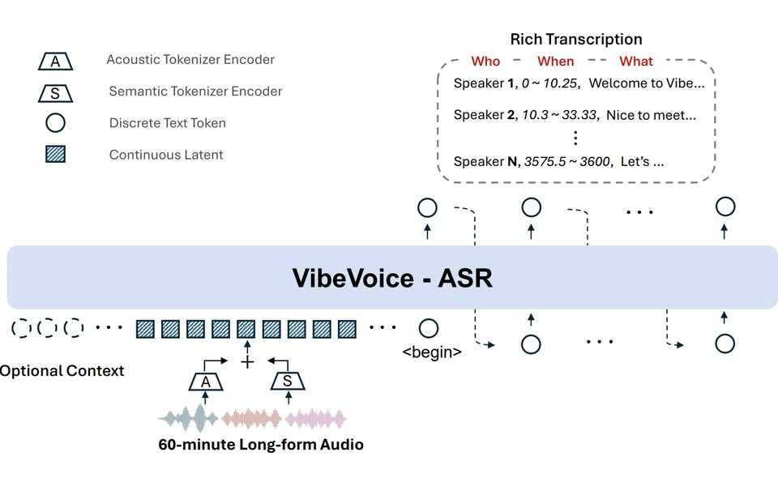
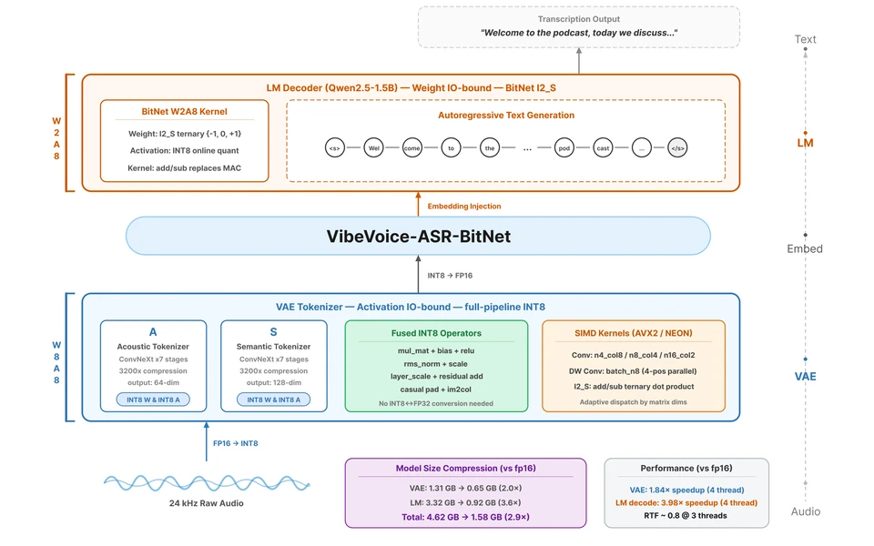
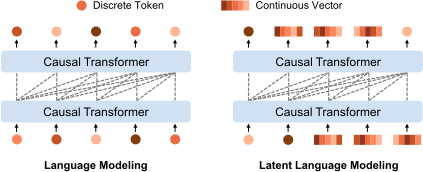
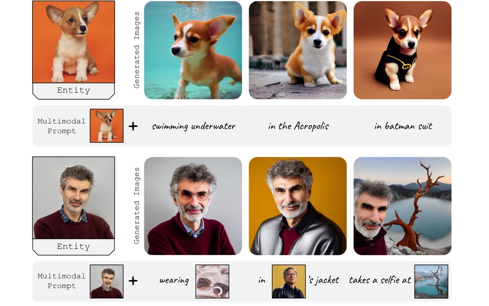

About Me
I am a Senior Researcher at Microsoft Research Asia (MSRA), working in the General Artificial Intelligence (GenAI) group. My research interests include multimodal learning and generation, speech and audio intelligence, computer vision, and representation learning.
My recent work includes VibeVoice, a family of open-source models for speech generation and recognition. My earlier research includes Kosmos-2, BEiT, and Conformer.
I conducted my doctoral research at the University of Chinese Academy of Sciences under the supervision of Prof. Qixiang Ye. I received my B.E. degree from Huazhong University of Science and Technology in 2019.
Selected Publications
Full list on Google Scholar


Multimodal Latent Language Modeling with Next-Token Diffusion
International Conference on Machine Learning (ICML), 2026



* Equal contribution.